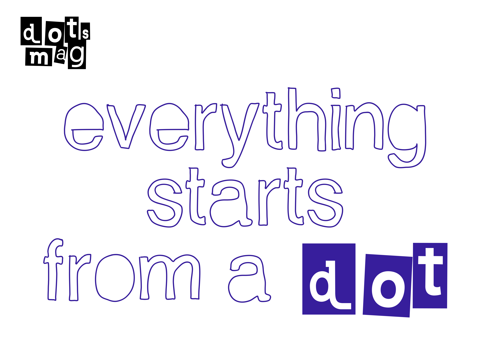

issues
masthead
about
KO
/
EN

Issue 01: Mobility — Now Live
Explore Issues →
No.
주제
Topic
발행
Published
01
차량 산업 패러다임의 변화
The Paradigm Shift in the Automotive Industry
Mobility — from racing culture to SDV
2026.06
→